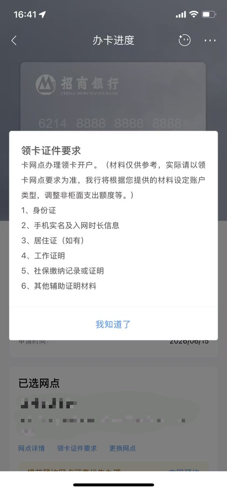
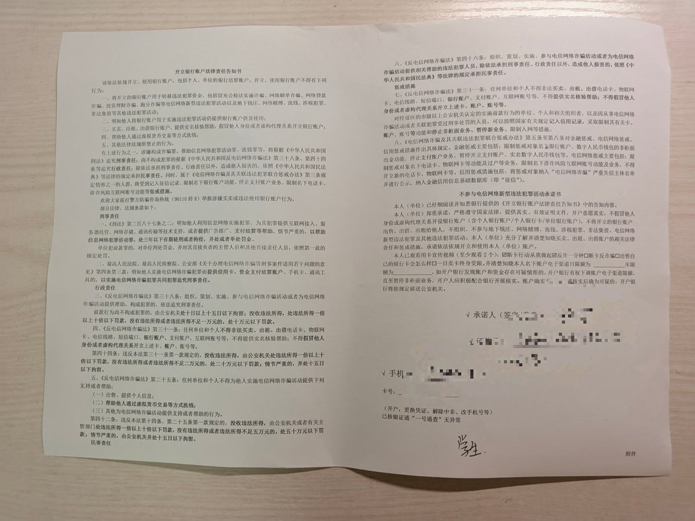

Pavlova
@pavlova233
@xFurina_ 好像看地方 可以看我上个月的帖子 (得交很多材料 最后差点投诉


Pavlova
@pavlova233
未成年境内有什么容易办的 MasterCard / Visa 卡吗?
听说招行好办就在线上申请了一张，16 岁以上填身份证可以成功申请。但到线下拿卡的时候说得家长代办且需要验证亲属关系。
工作人员说带自己和家长的身份证与出生证明，结果自己的出生证明上没有姓名过不了，带上了户口本也是说没办法确定亲属关系。 https://t.co/c0uJkmmxsE
鱼块糯🏳️⚧️
@xFurina_
@pavlova233 招行卡的没那么严吧